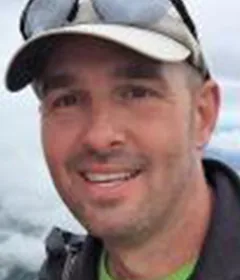
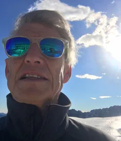
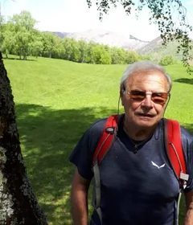
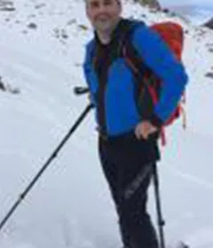
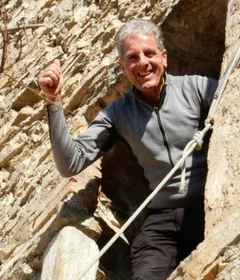
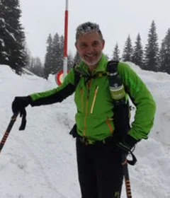
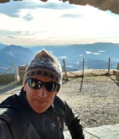
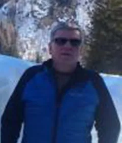
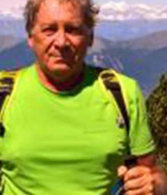

12 membres
Département infrastructure
S’occupe des infrastructures de la section : cabanes et sentiers. Il appuie le comité sur toutes les questions et tous les projets liés aux cabanes. Par l’intermédiaire des préposés, il suit le travail des gardiens, coordonne l’entretien ordinaire et extraordinaire, gère les aspects administratifs et contractuels avec les gardiens et assure la promotion des cabanes.

Richard KnupferResponsable des cabanes
Ulisse ConrengiaResponsable des sentiers
Stefano OlgiatiResponsable des sentiers

Edgardo BulloniResponsable technique des cabanes
À désignerPréposé, Capanna Michela Motterascio

Edy GalliPréposé, Capanna Campo Tencia

Fabio SavoldelliPréposé, Capanna Adula

Marzio PaganiPréposé, Capanna Cristallina et Baita del Luca

Francesco MattinelliPréposé, Capanna Cristallina

Erico FogliadaPréposé, Capanna Monte Bar

Mauro ScalmaniniPréposé, Capanna Monte Bar

Roberto GrassiPréposé, Capanna Monte Bar